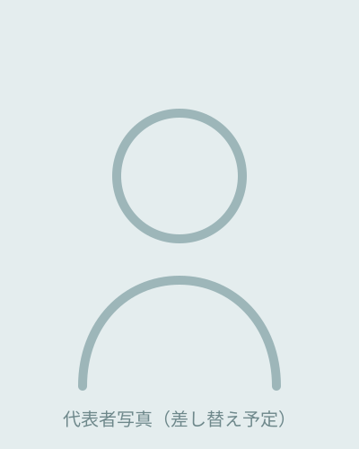

代表者写真は準備中です。
「難しそう」を、
いっしょに越えていく。
ざつね屋 代表 ／ 地域企業の小さな業務変革屋
多様な現場での経験を経て、地域企業が「AIを知っている」から「実際に使える」へ変わっていく場面を一緒に作りたいと、ざつね屋を立ち上げました。広島県府中市を拠点に、近隣の地域企業の業務変革に伴走しています。
なぜ、このサービスを始めたか
パソコン講師・NPO代表・カスタマーエンジニア・DX推進担当・専門学校の担任と、9つの現場を経験する中で、ある共通の課題を繰り返し目にしてきました。
「AIを使ってみたいが、何から始めたらいいかわからない」「研修を受けたが、業務では使えていない」。
知識と実践の間に、大きな溝がある。
提案だけするコンサルでもなく、システムを納品するだけの業者でもない。業務を一緒に整理して、作って、定着するまで伴走できる存在が必要だと感じ、ざつね屋を立ち上げました。
「教えられる実装者」が、業務整理から伴走します
パソコン講師から生成AIプロダクトの開発まで、9つの現場を経てきました。その一つひとつが、いまの伴走の土台になっています。
教えられる実装者
ざつね屋では、提案にとどまらず、現場に合わせたAI指示書・手順書の作成、操作説明、運用後の改善まで一貫して対応します。教える仕事と、実際に作る仕事の両方を続けてきました。
パソコン講師／専門学校の担任／AIプロダクト開発現場目線の伴走
人材育成や業務手順書づくりを通じて「人が動く仕組み」を作ってきた経験があります。導入して終わりではなく、結果が出るまで付き合います。
NPO法人代表／企業の課長職／専門学校の担任業務整理から入れる
AI以前に業務が整理できていない会社が大半です。課題のヒアリング、業務フローの可視化、要件定義から対応できるので、遠回りしません。
Webディレクター／カスタマーエンジニア／DX推進担当支援で大切にしていること
「難しそう」を言い訳にしない
技術的な言葉を使わず、現場の言葉でAIを説明します。「うちには難しい」と感じる前に、一緒に試してみてください。
担当者が自分で動ける状態まで
渡して終わりではなく、担当者が日常業務で自分一人で使えるようになるまで一緒に進みます。依存ではなく自立を目指します。
ツールより先に業務を整理する
AIツールを入れる前に、まず業務の流れを整理します。手順が明確になれば、AIは確実に役立ちます。
まずはお気軽にご相談ください
「うちの業務でも使えるか？」の段階で大丈夫です。相談・お見積りはすべて無料です。
返信は2営業日以内です。しつこい営業連絡はいたしません。